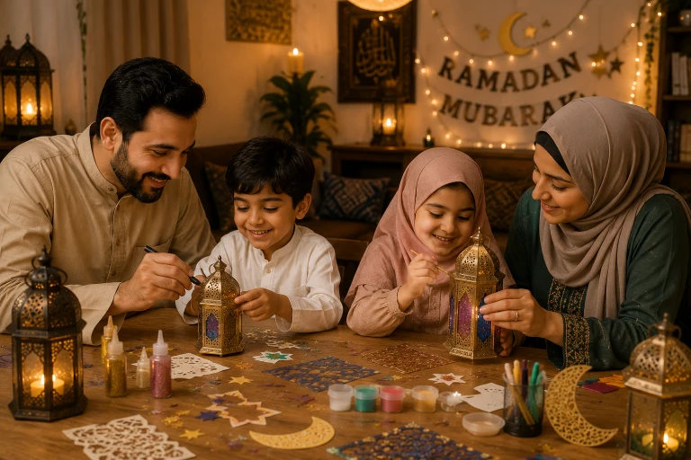
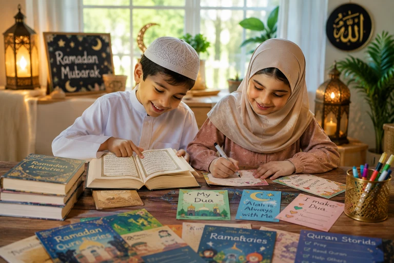
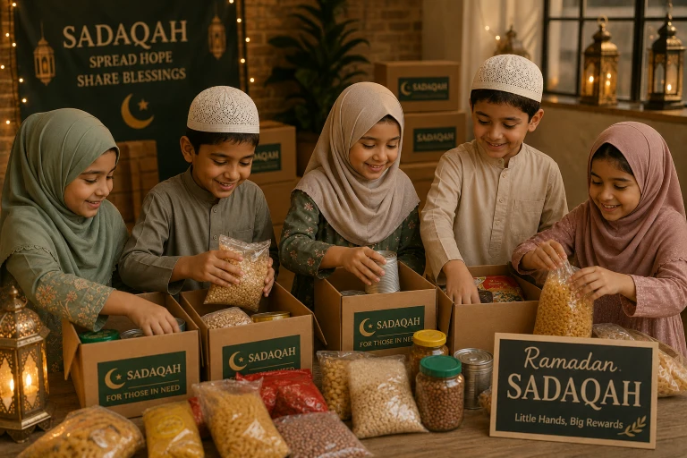

Ramadan is the most blessed month of the year, but for Muslim parents, it often brings a unique challenge: "How do I keep my kids engaged, excited, and spiritually connected without making it feel like a chore?" Whether you have energetic toddlers, curious elementary kids, or moody teenagers, this comprehensive guide will give you 30 practical, fun, and deeply Islamic activities to transform your home into a Ramadan paradise.
📖 In This Complete Guide, You'll Learn:
- Why making Ramadan fun for kids builds lifelong faith (psychology + Islam)
- 5 easy Pre-Ramadan preparation ideas to build excitement
- 30 categorized activities: Crafts, Quran games, Sadaqah projects, and family bonding
- A realistic daily routine for kids during fasting hours
- Common mistakes parents make during Ramadan with kids (and how to avoid them)
- How to make the Last 10 Nights magical for children
🔑 Key Takeaways
- Focus on creating positive memories: Kids associate Islam with joy, not restriction.
- Keep activities age-appropriate: Toddlers need sensory play; teens need purpose and responsibility.
- Consistency beats intensity: 10 minutes of daily Quran is better than 2 hours once a week.
- Involve them in Iftar and Suhoor: Cooking and setting the table are acts of worship (Ibadah).
- Model the behavior: If they see you excited about Taraweeh and Quran, they will be too.

📑 In This Article
Why Making Ramadan Fun is an Islamic Duty
Many parents mistakenly believe that Ramadan should be a strict, somber month for children. But the Prophet Muhammad (peace be upon him) showed us a different way. He used to play with children, let them eat while fasting (to practice), and make them feel included in the spiritual atmosphere.
The Prophet (PBUH) said: "Teach the child prayer when he is seven years old, and discipline him for it when he is ten."
— Sunan Abu Dawud 495, SahihThis hadith establishes a 3-year "grace period" (ages 7-10) where the focus is on love, familiarity, and positive association, not strict discipline. When we make Ramadan activities fun, engaging, and full of love, we are actually fulfilling the Sunnah of preparing their hearts for a lifetime of worship.
Psychologically, children repeat behaviors that bring them joy and connection. If they associate Ramadan with family crafts, delicious Iftars, exciting Quran games, and your undivided attention, they will crave Ramadan every year.
Pre-Ramadan Prep: Building the Excitement
The excitement should start before the first moon is sighted. Here is how to build anticipation:
1. The Ramadan Countdown Calendar
Create a DIY paper chain or a fabric pocket calendar. Every day, let your child remove one link or open one pocket to reveal a small treat, a good deed idea, or a dua for the day. This teaches them patience (Sabr) and the concept of time.
2. Decorate the House Together
Involve them in hanging crescent moons, stars, and "Ramadan Mubarak" banners. Let them choose the colors. When they help create the environment, they feel a sense of ownership over the month.
3. Set Family Ramadan Goals
Sit together and write down 3 family goals (e.g., "Read 1 Juz together," "Give $10 in Sadaqah," "Cook Iftar twice a week"). Post it on the fridge. This builds teamwork and accountability.
30 Fun Ramadan Activities (Categorized)
Here are 30 practical activities divided into 5 powerful categories. You don't have to do all of them—pick 2-3 per week that fit your family's energy.
Category 1: Quran & Dua Engagement (Spiritual Growth)
- Quran Scavenger Hunt: Hide verses around the house. When they find them, read the translation together.
- Dua of the Day Jar: Write 30 short duas on popsicle sticks. Pull one out every morning after Fajr.
- Listen & Draw: Play a beautiful Quran recitation (like Mishary Rashid) and have them draw what the verses make them feel.
- Memorize a Short Surah Together: Pick a new surah each week. Use repetition and rewards.
- "Talk to Allah" Journal: For older kids, give them a notebook to write their personal duas and reflections.
- Quran Corner Makeover: Create a cozy, beautifully lit space with cushions and a special Quran stand just for them.
Category 2: Arts, Crafts & Creativity (For Toddlers & Young Kids)
- Paper Fanous (Lanterns): Use colored paper, glue, and glitter to make traditional Ramadan lanterns.
- Good Deed Tree: Draw a large tree on poster paper. Every time they do a good deed, they write it on a paper leaf and stick it to the tree.
- Islamic Geometric Coloring: Print complex geometric patterns. It's calming and teaches them about Islamic art.
- DIY Prayer Mats: Decorate small pieces of felt or fabric that they can use for their Sunnah prayers.
- Ramadan Playdough: Make green and gold playdough. Use moon and star cookie cutters.
- Storytelling with Puppets: Use socks or paper bags to make puppets and act out stories of the Prophets.

Category 3: Sadaqah & Community (Building Empathy)
- The Sadaqah Jar: Give them a small daily coin to put in a jar. At Eid, let them choose where to donate it.
- Toy Donation Drive: Have them pick 3 gently used toys to give to less fortunate children.
- Iftar for a Neighbor: Cook a simple dish together and deliver it to a non-Muslim or Muslim neighbor.
- Feed the Birds: Put out bird feeders. Teach them that caring for animals is Sadaqah.
- Write Thank You Notes: Have them write cards for essential workers, teachers, or grandparents.
- Community Cleanup: Take a walk in your neighborhood with trash bags. Teach them that removing harm from the path is charity.
Category 4: Kitchen & Iftar Fun (Life Skills + Sunnah)
- Date Tasting: Buy 3 different types of dates. Have a blind taste test and learn about the Ajwa date.
- Make the Iftar Table: Let them arrange the dates, water, and samosas. It's a huge confidence booster.
- Cook a Simple Dish: Teach them to make fruit salad, sandwiches, or a simple dessert.
- Learn the Iftar Dua: Write it on a beautiful card and let them lead the family in making dua before eating.
- Hydration Station: Let them prepare infused water (lemon, mint, cucumber) for Suhoor and Iftar.
- Bake Eid Cookies Early: Practice baking some simple Eid treats in the last week of Ramadan.
Category 5: Family Bonding & Night Worship
- Family Taraweeh at Home: If you can't go to the mosque, pray 2-4 rakats together at home. Let the oldest child lead sometimes.
- Islamic Movie Night: Watch age-appropriate Islamic cartoons or documentaries (like 'The Story of Makkah').
- Read 'The Sealed Nectar' (Ar-Raheeq Al-Makhtum) for Kids: Read one story from the Prophet's (PBUH) life every night before bed.
- Stargazing & Tafsir: Go outside at night. Look at the stars and read the Tafsir of Surah An-Najm or Surah Al-Buruj.
- Gratitude Circle: At Iftar, go around the table and share one thing you are thankful for today.
- Eid Gift Planning: Have them draw or write a list of who they want to give gifts to at Eid, teaching them the Sunnah of giving.
The Ideal Daily Routine for Kids in Ramadan
Structure is the secret to a peaceful Ramadan. Here is a realistic, flexible routine that balances worship, rest, and fun:
- 4:30 AM - Suhoor: Wake up gently. Eat together. Make the intention to fast (if applicable).
- 5:00 AM - Fajr & Morning Adhkar: Pray together. Read 1 page of Quran. Make morning duas.
- 5:30 AM - Sleep/Rest: If they don't have school, let them go back to sleep. If they do, get them ready calmly.
- 8:00 AM - School/Learning Time: Homeschooling, online classes, or regular school.
- 12:00 PM - Dhuhr & Quiet Time: Pray Dhuhr. This is the time for naps, audiobooks, or quiet coloring. Energy is low.
- 3:00 PM - Asr & Creative Play: Pray Asr. This is the best time for the crafts and activities listed above.
- 5:00 PM - Iftar Prep & Maghrib: Help in the kitchen. Break fast with dates and water. Pray Maghrib.
- 6:30 PM - Isha & Taraweeh: Pray together. If going to the mosque, take them; if at home, keep it short and sweet.
- 8:00 PM - Family Time: Islamic stories, games, or preparing for the next day.
- 9:00 PM - Bedtime: Wudu, bedtime duas, and sleep. (Adjust based on age).
Common Mistakes Parents Make
Avoid these pitfalls to keep the Ramadan spirit alive in your home:
Trying to make them finish the whole Quran or pray all night will burn them out. Start small and build up.
If Iftar is always a massive feast, they will fast just for the food. Keep meals simple and nutritious.
If they accidentally eat or break a fast, don't yell. Use it as a teaching moment. The Prophet (PBUH) was always gentle with children's mistakes.
Expecting them to be hyperactive at 4 PM while fasting is unrealistic. Plan low-energy activities for the late afternoon.
Your energy dictates their energy. If you are stressed and rushing, they will be too. Take 5 deep breaths before Iftar. Say "Bismillah" out loud. Let them see your peace.

Making the Last 10 Nights Magical
The last 10 nights are the crown jewel of Ramadan. Here is how to make them special for kids without keeping them up all night:
- Build a 'Laylatul Qadr' Fort: Use blankets, fairy lights, and pillows in the living room. Let them sleep in there and wake up for Tahajjud.
- The Dua Jar: Have them write down 10 special duas on pieces of paper. Put them in a jar. On odd nights, pull one out and make that dua together.
- Teach the Special Dua: Teach them: "Allahumma innaka 'afuwwun tuhibbul-'afwa fa'fu 'anni" (O Allah, You are Forgiving and love forgiveness, so forgive me).
- Midnight Snack: Make a special, healthy snack just for the last 10 nights to make staying up a positive experience.
- Gift for Eid: Tell them that if they try their best in these nights, Allah will give them the best Eid gift (Jannah).
Frequently Asked Questions
Start Small, Dream Big
You don't have to do all 30 activities. Pick just ONE activity from this list to try tomorrow. Whether it's making a Dua Jar or cooking Iftar together, the goal is connection, not perfection.
Which activity are you most excited to try? Let us know!
Final Thoughts
Ramadan is a gift from Allah, and our job as parents is to unwrap this gift beautifully for our children. By integrating these fun, Islamic activities into your daily routine, you are not just passing the time—you are building the foundation of their Iman. Years from now, they may not remember the exact number of rakats they prayed, but they will remember the smell of Iftar, the glow of the lanterns they made, and the feeling of their hand in yours as you walked to Taraweeh. May Allah accept our fasting, our prayers, and our efforts to raise a generation that loves Him. Ameen.